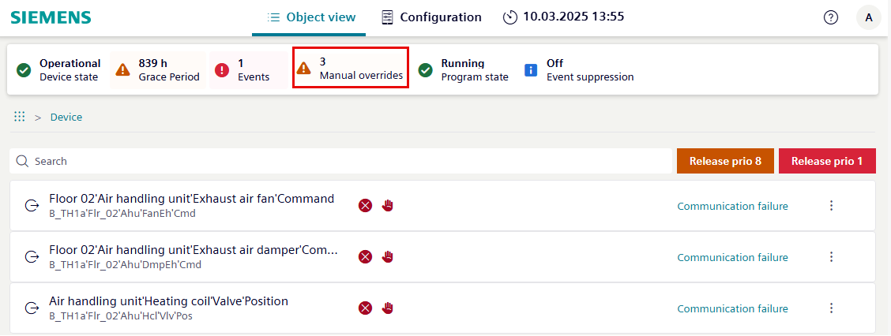

Manual overrides
Manual overrides display objects that have been manually overridden.

Objects in the manual overrides list may not be available for commanding if they have been overridden on the device.
- Select Manual overrides in the status bar to display the list of overridden objects.
Note: Selecting Manual overrides clears the breadcrumb list. - Selecting an object in the manual overrides list provides the same result as selecting an object of its type in the Object view.

Setting | Description |
|---|---|
Releases all point commands at priority 1. | |
Releases all point commands at priority 8. | |
| Object is manually overridden by an external switch. Other icons may display, depending on the object status. |
Operating mode | ||
| Out of service | Indicates whether the physical input/output has been decoupled by means of property. |
| Overridden | Object overridden by external switch |